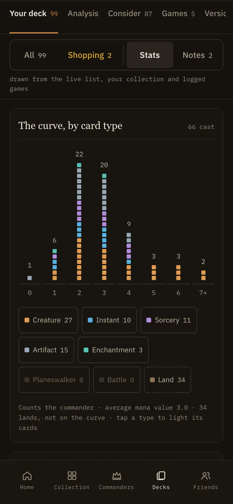

<title>Small Items 3</title>
<meta name="claude:viewport-fit-sides" content="cover">
<link href="https://fonts.googleapis.com/css2?family=Cinzel:wght@600;700&family=IBM+Plex+Mono:wght@400;500;600&family=IBM+Plex+Sans:wght@400;500;600;700&display=swap" rel="stylesheet">
<style>/* Small items 3 canvas: numbered boards of Now / Proposed frames at real size. Single dark look on purpose (Low Sun).
   Single dark look on purpose: the boards are the app's Low Sun dark theme, the frame around them its night table. */
:root{
  color-scheme:dark;
  --table:#0D0B09;--bg:#14110E;--surface:#1E1A15;--surface-raised:#211D18;--surface-rail:#1A1611;--surface-sunken:#18140F;
  --elevated:#29241F;--border:#2B241B;--border-strong:#3A3229;--border-dashed:#494037;--fg-locked:#6E6654;--fg-placeholder:#8B8270;--warning:#DEAA29;--fg:#EDE6D8;--fg-body:#C0B8A6;--fg-muted:#A59C89;--fg-faint:#948B78;
  --accent:#CF8745;--accent-text:#CF8745;--success:#6FA368;--fact:#8FA6BE;--danger:#C6533F;--was:#8FA6BE;
  --display:'Cinzel',Georgia,serif;--sans:'IBM Plex Sans',system-ui,sans-serif;--mono:'IBM Plex Mono',ui-monospace,monospace;
}
body{background:var(--table);color:var(--fg);font-family:var(--sans)}
*{box-sizing:border-box}
p,h1,h2,h3,h4,ol,ul,figure{margin:0}
ol,ul{padding:0;list-style:none}
a{color:var(--accent-text)}
a:focus-visible{outline:2px solid var(--accent);outline-offset:2px}
.canvas{display:flex;flex-direction:column;gap:72px;padding-block:40px 80px;padding-left:max(16px,env(safe-area-inset-left,0px));padding-right:max(16px,env(safe-area-inset-right,0px))}
.kick{display:flex;align-items:center;gap:10px;font:500 10.5px var(--mono);letter-spacing:.14em;text-transform:uppercase;color:var(--fg-faint)}
.kick .tag{background:var(--accent);color:var(--table);border-radius:5px;padding:3px 8px;font-weight:600;letter-spacing:.04em}
.top{display:flex;flex-direction:column;gap:12px;max-width:900px}
.top h1{font:700 clamp(28px,5vw,40px)/1.15 var(--display);text-wrap:balance}
.top p{font-size:15px;line-height:1.6;color:var(--fg-body);max-width:68ch}
.pillw,.pilli{font:600 11px var(--mono);letter-spacing:.06em;border-radius:4px;padding:2px 6px}
.pillw{background:color-mix(in oklab,var(--was) 22%,transparent);color:var(--was)}
.pilli{background:color-mix(in oklab,var(--accent) 22%,transparent);color:var(--accent-text)}
.map{display:grid;grid-template-columns:repeat(auto-fill,minmax(260px,1fr));gap:8px;margin-top:6px;counter-reset:m}
.map li{counter-increment:m;display:flex;align-items:baseline;gap:10px;border:1px solid var(--border);border-radius:10px;padding:10px 12px;background:var(--bg);font-size:13.5px;color:var(--fg-body)}
.map li::before{content:counter(m);font:600 12px var(--mono);color:var(--accent-text)}
.map li b{font-weight:500;color:var(--fg);flex:1;min-width:0}
.map a{font:500 11px var(--mono);white-space:nowrap}
.board{display:flex;flex-direction:column;gap:26px;scroll-margin-top:16px}
.bh{display:flex;flex-direction:column;gap:9px;max-width:1100px}
.bh h2{font:700 clamp(22px,3.4vw,28px)/1.2 var(--display);text-wrap:balance}
.bh p{font-size:14px;line-height:1.65;color:var(--fg-body);max-width:92ch}
.bh p b{color:var(--fg)}
.frames{display:flex;flex-wrap:wrap;gap:40px;align-items:flex-start;max-width:100%;overflow-x:auto;padding-bottom:4px}
.fr{display:flex;flex-direction:column;gap:12px;flex:none;max-width:100%}
.fr .lab2{font:500 10.5px var(--mono);letter-spacing:.14em;text-transform:uppercase;color:var(--was)}
.fr.is .lab2{color:var(--accent-text)}
.fr .cap{width:0;min-width:100%;font-size:13px;line-height:1.55;color:var(--fg-muted);text-wrap:pretty}
.note{max-width:820px;border:1px solid var(--border-strong);border-radius:12px;background:var(--bg);padding:14px 16px;font-size:13px;line-height:1.6;color:var(--fg-body)}

/* The labelled screen: picture, pins, halo (labelled-screen.tsx). */
.shot{position:relative;overflow:hidden;border:1px solid var(--border-strong);background:var(--surface-sunken);flex:none}
.shot img{position:absolute;inset:0;width:100%;height:100%;display:block}
.halo{position:absolute;z-index:2;border-radius:8px;box-shadow:0 0 0 2px color-mix(in oklab,var(--accent) 75%,transparent),0 0 0 6px color-mix(in oklab,var(--accent) 20%,transparent),0 0 0 2000px color-mix(in oklab,var(--bg) 34%,transparent)}
.pin{position:absolute;z-index:3;width:24px;height:24px;margin:-12px 0 0 -12px;border-radius:50%;background:var(--accent);color:var(--bg);font:600 12px/24px var(--mono);text-align:center;box-shadow:0 0 0 2px var(--bg),0 3px 10px rgb(0 0 0/.55)}
.pin.on{box-shadow:0 0 0 2px var(--bg),0 0 0 6px color-mix(in oklab,var(--accent) 38%,transparent),0 3px 10px rgb(0 0 0/.55)}
.labs{display:flex;flex-direction:column;gap:2px}
.lab{display:flex;gap:12px;align-items:flex-start;margin:0 -10px;padding:9px 10px;border:1px solid transparent;border-radius:10px;font-size:14px;line-height:1.5;color:var(--fg-body)}
.lab.on{border-color:color-mix(in oklab,var(--accent) 55%,transparent);background:var(--surface)}
.lab b{font-weight:600;color:var(--fg)}
.num{flex:none;width:22px;height:22px;margin-top:1px;border-radius:50%;background:var(--accent);color:var(--bg);font:600 11px/22px var(--mono);text-align:center}

/* Phone page column. */
.page{width:390px;background:var(--bg);border:1px solid var(--border-strong);border-radius:28px;overflow:hidden;padding:18px 0 26px}
.sec{display:flex;flex-direction:column;gap:16px;padding:0 16px 30px}
.sec.first-rule{border-top:1px solid var(--border);padding-top:26px}
.cropwrap{height:150px;overflow:hidden;border:1px solid var(--border-strong);border-top:0;border-radius:0 0 20px 20px;position:relative}
.cropwrap img{display:block;max-width:none}
.ellip{font:500 10.5px var(--mono);color:var(--fg-faint);text-align:center;letter-spacing:.06em}
.sech{display:flex;flex-direction:column;gap:3px}
.sech .kick{letter-spacing:.14em}
.sech h2{font:600 21px var(--display)}
.sech p{font-size:13.5px;color:var(--fg-muted)}
.sech.new .kick{color:var(--accent-text)}
.screensep{height:10px;background:var(--table);border-block:1px solid var(--border-strong);margin:4px 0 30px}
.blk{display:flex;flex-direction:column;gap:16px}
.sh{display:flex;align-items:center;gap:10px;border-top:1px solid var(--border);padding-top:14px}
.sh h3{font:600 18px var(--display);letter-spacing:.01em}
.sh>span:last-child{font-size:13px;color:var(--fg-muted);margin-left:2px}
.plate{box-sizing:border-box;display:flex;width:22px;height:22px;flex:none;align-items:center;justify-content:center;border-radius:6px;background:color-mix(in srgb,var(--accent) 16%,transparent);border:1px solid color-mix(in srgb,var(--accent) 45%,transparent);color:var(--accent)}
.plate .dia{width:7px;height:7px;transform:rotate(45deg);background:var(--accent)}
.ringmark{display:flex;width:22px;height:22px;flex:none;align-items:center;justify-content:center;border-radius:50%;border:1px solid var(--accent);color:var(--accent-text);font-size:12px}
.panel{display:flex;flex-direction:column;gap:14px;border-radius:16px;padding:14px 14px 16px;margin:0 -4px}
.panel .sh{border-top:0;padding-top:0}
.panel.gtk{background:var(--surface-sunken);border:1px solid var(--border-strong)}
.panel.try{background:color-mix(in oklab,var(--accent) 7%,var(--bg));border:1px solid color-mix(in oklab,var(--accent) 34%,var(--border))}
.swipe{display:flex;gap:12px;overflow:hidden;margin-right:-16px}
.panel .swipe{margin-right:-14px}
.swipe li{flex:none;width:292px}
.dots{display:flex;justify-content:center;gap:6px}
.dots i{width:6px;height:6px;border-radius:50%;background:var(--border-strong)}
.dots i.on{background:var(--accent)}
.rule{display:flex;flex-direction:column;height:100%;border:1px solid var(--border);border-radius:14px;background:var(--surface);overflow:hidden}
.rpic{min-height:150px;display:flex;align-items:center;justify-content:center;background:var(--bg);border-bottom:1px solid var(--border);padding:12px}
.rule>p{padding:13px 14px 15px;font-size:13.5px;line-height:1.55;color:var(--fg-body)}
.dg{width:256px;display:flex;flex-direction:column;gap:10px}
.crow{display:flex;align-items:center;gap:10px;border:1px solid var(--border-strong);border-radius:8px;padding:8px 10px;background:var(--surface);font-size:13px}
.crow span{flex:1}
.dot{width:9px;height:9px;border-radius:50%}
.dot.own{background:var(--success)}
.tag{font:500 10px var(--mono);font-style:normal;color:var(--accent-text);border:1px solid color-mix(in oklab,var(--accent) 50%,transparent);border-radius:999px;padding:1px 7px}
.dcap{font:500 10.5px var(--mono);color:var(--fg-muted)}
.chips{display:flex;flex-wrap:wrap;gap:6px}
.chips s{font:11px var(--mono);color:var(--fg-faint);border:1px dashed var(--border-strong);border-radius:999px;padding:2px 8px}
.cells{display:grid;grid-template-columns:repeat(3,1fr);gap:8px}
.cells div{display:flex;flex-direction:column;gap:4px;border:1px solid var(--border-strong);border-radius:8px;padding:8px;background:var(--surface);font-variant-numeric:tabular-nums}
.cells b{font:600 11px var(--mono);color:var(--fg-muted);text-transform:uppercase;letter-spacing:.06em}
.cells span{font-size:14px}
.cells i{height:4px;border-radius:2px;background:linear-gradient(90deg,var(--success) var(--p),var(--border-strong) var(--p))}
.cells i.lo{background:linear-gradient(90deg,var(--accent) var(--p),var(--border-strong) var(--p))}

/* Tool card, shipped (tool-card.tsx). */
.tc{display:flex;flex-direction:column;border:1px solid var(--border);border-radius:14px;background:var(--surface);overflow:hidden}
.tpic{position:relative;aspect-ratio:3/2;border-bottom:1px solid var(--border);background:var(--bg);overflow:hidden}
.tpic img,.npic img{position:absolute;inset:0;width:100%;height:100%;object-fit:cover;display:block}
.thalo{position:absolute;border-radius:9px;box-shadow:0 0 0 2px color-mix(in oklab,var(--accent) 75%,transparent),0 0 0 6px color-mix(in oklab,var(--accent) 20%,transparent),0 0 0 2000px color-mix(in oklab,var(--bg) 28%,transparent)}
.tbd{display:flex;flex-direction:column;gap:8px;padding:14px 14px 12px}
.tbd h4,.nbd h4{font-size:16px;font-weight:600;line-height:1.3}
.tbd p,.nbd p{font-size:14px;line-height:1.5;color:var(--fg-body)}
.tft{display:flex;align-items:center;gap:10px;min-height:40px;border-top:1px solid var(--border);padding-top:8px;margin-top:2px}
.sm{font:12px var(--mono);color:var(--fg-muted);white-space:nowrap}
.go{margin-left:auto;font-size:13.5px;color:var(--fg-muted);white-space:nowrap;overflow:hidden;text-overflow:ellipsis}
.ring{display:flex;width:30px;height:30px;flex:none;align-items:center;justify-content:center;border-radius:50%;border:1px solid var(--accent);color:var(--accent-text);font-size:15px}
.more{align-self:center;min-height:44px;display:flex;align-items:center;font:500 10px var(--mono);letter-spacing:.04em;color:var(--fg-faint)}

/* Tool card, proposed. */
.ntc{display:flex;flex-direction:column;gap:12px;border:1px solid var(--border-strong);border-radius:14px;background:var(--surface);padding:10px 10px 12px;position:relative;z-index:1}
.npic{position:relative;aspect-ratio:3/2;border-radius:9px;border:1px solid var(--border-strong);background:var(--bg);overflow:hidden;box-shadow:inset 0 0 0 1px rgb(0 0 0/.35)}
.nbd{display:flex;flex-direction:column;gap:8px;padding:0 4px}
.where{font:12px var(--mono);color:var(--fg-muted);text-decoration:underline;text-decoration-color:var(--border-strong);text-underline-offset:3px}
.btn{display:flex;align-items:center;justify-content:center;gap:8px;min-height:44px;margin-top:4px;border-radius:10px;background:var(--accent);color:var(--bg);font-size:14.5px;font-weight:600}
.btn b{font-weight:600}
.stack{position:relative;padding-bottom:12px}
.peek{position:absolute;left:8px;right:8px;bottom:6px;height:20px;border:1px solid var(--border-strong);border-top:0;border-radius:0 0 14px 14px;background:var(--surface-raised)}
.peek.two{left:16px;right:16px;bottom:0;background:var(--surface-sunken);z-index:-1}
.morebtn{display:flex;align-items:center;justify-content:center;gap:8px;min-height:44px;border-radius:10px;border:1px solid var(--border-strong);background:var(--surface);color:var(--fg);font-size:14px;font-weight:500}
.morebtn b{color:var(--accent-text)}
.drow{display:grid;grid-template-columns:repeat(2,330px);gap:16px;align-items:start}
.drow .ntc .btn{margin-top:auto}

/* Phone viewport. */
.vp{position:relative;width:390px;height:844px;border:1px solid var(--border-strong);border-radius:36px;overflow:hidden;background:var(--bg)}
.phead{position:absolute;inset:0 0 auto;height:52px;z-index:6;display:flex;align-items:center;justify-content:space-between;padding:0 18px;background:var(--bg);border-bottom:1px solid var(--border);font:600 16px var(--display)}
.phead span{width:26px;height:26px;border-radius:50%;border:1px solid var(--border-strong);display:flex;align-items:center;justify-content:center;font:500 13px var(--sans);color:var(--fg-muted)}
.vpclip{position:absolute;inset:52px 0 74px;overflow:hidden}
.vpbody{position:absolute;left:0;right:0}
.vpbody>.sech{padding:26px 16px 16px}
.tabbar{position:absolute;inset:auto 0 0;height:74px;z-index:6;display:flex;justify-content:space-around;padding:8px 6px 14px;background:var(--surface-rail);border-top:1px solid var(--border)}
.tabbar span{display:flex;flex-direction:column;align-items:center;gap:5px;font-size:10.5px;color:var(--fg-faint)}
.tabbar i{width:20px;height:20px;border-radius:6px;border:1.5px solid currentColor;opacity:.7}
.tabbar .cur{color:var(--accent-text)}
.dock{position:absolute;left:12px;right:12px;bottom:86px;z-index:5;display:flex;gap:12px;align-items:flex-start;padding:12px 12px 12px 14px;border-radius:12px;border:1px solid color-mix(in oklab,var(--accent) 55%,var(--border-strong));background:var(--elevated);box-shadow:0 -12px 36px rgb(0 0 0/.45);font-size:14px;line-height:1.5;color:var(--fg-body)}
.dock p{flex:1;min-width:0}
.dock b{color:var(--fg);font-weight:600}
.dock .x{flex:none;width:28px;height:28px;display:flex;align-items:center;justify-content:center;color:var(--fg-muted);font-size:14px;margin:-4px -4px 0 0}

@media (max-width:700px){.drow{grid-template-columns:1fr}.drow .tc,.drow .ntc{max-width:330px}}
@media (prefers-reduced-motion:reduce){*{scroll-behavior:auto}}
.gut{position:relative;flex:none}
.lead,.leadv{position:absolute;z-index:3;background:color-mix(in oklab,var(--accent) 45%,transparent)}
.lead{height:1px}
.leadv{width:1px}
.lead.on,.leadv.on{background:var(--accent)}
.tick{position:absolute;z-index:3;width:7px;height:7px;margin:-3.5px 0 0 -3.5px;border-radius:50%;background:var(--bg);border:1.5px solid color-mix(in oklab,var(--accent) 70%,transparent)}
.tick.on{background:var(--accent);border-color:var(--accent)}
.sh.stacked{display:grid;grid-template-columns:22px 1fr;column-gap:10px;row-gap:2px;align-items:center}
.sh.stacked>span:last-child{grid-column:2;margin-left:0}
.brk{position:absolute;z-index:3;pointer-events:none}
.brk i{position:absolute;width:var(--arm);height:var(--arm);border:0 solid color-mix(in oklab,var(--accent) 85%,transparent);filter:drop-shadow(0 0 1px var(--bg)) drop-shadow(0 0 1px var(--bg))}
.brk .tl{left:0;top:0;border-left-width:2px;border-top-width:2px;border-top-left-radius:3px}
.brk .tr{right:0;top:0;border-right-width:2px;border-top-width:2px;border-top-right-radius:3px}
.brk .bl{left:0;bottom:0;border-left-width:2px;border-bottom-width:2px;border-bottom-left-radius:3px}
.brk .br{right:0;bottom:0;border-right-width:2px;border-bottom-width:2px;border-bottom-right-radius:3px}
.brk.on i{border-color:var(--accent)}
.caret{position:absolute;z-index:3;width:0;height:0;margin-top:-5px;border:5px solid transparent;border-left:6px solid color-mix(in oklab,var(--accent) 70%,transparent)}
.caret.on{border-left-color:var(--accent)}
.stub{position:absolute;z-index:2;width:1.5px;margin-left:-.75px;background:color-mix(in oklab,var(--accent) 55%,transparent)}
.stub.on{background:var(--accent)}

/* ---- Small items 3 ---- */
code{font:500 12px var(--mono);color:var(--fg);background:var(--surface);border-radius:4px;padding:1px 5px}
.map li div{flex:1;min-width:0;display:flex;flex-direction:column;gap:3px}
.map li span{font-size:12.5px;color:var(--fg-muted)}
.rulebox{max-width:1100px;border:1px solid var(--border-strong);border-radius:12px;background:var(--bg);padding:16px 18px;display:flex;flex-direction:column;gap:10px}
.rulebox h4{font:500 10.5px var(--mono);letter-spacing:.14em;text-transform:uppercase;color:var(--accent-text)}
.rulebox ol{list-style:decimal;padding-left:20px;display:flex;flex-direction:column;gap:7px}
.rulebox li{font-size:13.5px;line-height:1.6;color:var(--fg-body)}
.rulebox b{color:var(--fg)}
.tabwrap{max-width:1100px;overflow-x:auto}
.ctab{border-collapse:collapse;width:100%;font-size:13px;line-height:1.5}
.ctab th{text-align:left;font:500 10px var(--mono);letter-spacing:.12em;text-transform:uppercase;color:var(--fg-faint);padding:8px 10px;border-bottom:1px solid var(--border-strong)}
.ctab td{padding:9px 10px;border-bottom:1px solid var(--border);color:var(--fg-body);vertical-align:top}
.ctab td:first-child{color:var(--fg);white-space:nowrap}
.ctab td:nth-child(2){color:var(--fg-muted)}

/* Good to know panel and cards (rule-card.tsx) */
.gtkp,.gtk{display:flex;flex-direction:column;gap:14px;border-radius:16px;border:1px solid var(--border-strong);background:var(--surface-sunken);padding:14px 14px 16px}
.gtk .gh{display:grid;grid-template-columns:22px 1fr;align-items:center;column-gap:10px;row-gap:2px}
.gtk .mk{width:16px;height:16px;transform:rotate(45deg);border:1.5px solid var(--accent);border-radius:2px;margin-left:3px}
.gtk h3{font:600 18px var(--display);color:var(--fg)}
.gtk .sub{grid-column:2;font-size:13px;color:var(--fg-muted)}
.gtkrow{display:flex;gap:12px;overflow:hidden}
.gtk.swipe .gtkrow{margin-right:-14px}
.gtk.grid .gtkrow{display:grid;grid-template-columns:repeat(2,388px);gap:16px}
.pcol{width:358px}
.pcol.pad{display:flex;flex-direction:column;gap:14px}
.dcolw{width:822px}
.pair{display:flex;gap:16px;flex-wrap:wrap}
.rcard{flex:none;display:flex;flex-direction:column;border:1px solid var(--border);border-radius:14px;background:var(--surface);overflow:hidden}
.rcard .dplate{min-height:150px;display:flex;align-items:center;justify-content:center;background:var(--bg);border-bottom:1px solid var(--border);padding:12px}
.rcard p{padding:13px 14px 15px;font-size:13.5px;line-height:1.55;color:var(--fg-body);text-wrap:pretty}
.dgm{display:flex;flex-direction:column;align-items:center;gap:10px;max-width:100%}
.dcols{display:flex;align-items:center;justify-content:center;max-width:100%}
.dcol{display:flex;flex-direction:column;min-width:0;flex:none}
.dcol.ctr{align-items:center}
.btw{display:flex;flex-direction:column;align-items:center;gap:6px;color:var(--fg-faint);font-size:16px}
.cp{font:500 10px var(--mono);letter-spacing:.04em}
.cp.up{text-transform:uppercase;color:var(--fg-faint)}
.cp.mu{color:var(--fg-muted)}
.cp.mu.new{color:var(--fg-body)}
.drw{display:flex;align-items:center;gap:8px;min-width:0;white-space:nowrap;height:30px;padding:0 10px;font-size:12.5px;border-radius:7px;background:var(--surface-raised);color:var(--fg)}
.drw.compact{height:22px;padding:0 8px;font-size:11px;gap:6px}
.drw .nm{flex:1;min-width:0;overflow:hidden;text-overflow:ellipsis}
.drw .tg{flex:none;font:500 10px var(--mono)}
.tg.muted{color:var(--fg-muted)}.tg.accent{color:var(--accent-text)}.tg.success{color:var(--success)}.tg.short{color:#D9975C}
.drw .bt,.bt{flex:none;font:500 11px var(--mono);color:var(--warning);background:color-mix(in oklab,var(--warning) 14%,transparent);border-radius:4px;padding:1px 5px;white-space:nowrap}
.bt i{font-style:normal}
.odot{width:8px;height:8px;border-radius:50%;flex:none}
.odot.own{background:var(--success)}
.odot.unowned{border:1.2px dashed var(--fg-muted)}
/* now */
.drw.now{border:1px solid var(--border)}
.drw.now.edge{box-shadow:inset 2px 0 0 0 var(--accent)}
.drw.now.dim{opacity:.75}
.drw.now.gone{opacity:.55;text-decoration:line-through}
/* proposed */
.drw.new{border:1px solid var(--border-dashed)}
.drw.new.compact{font-size:11.5px}
.drw.new.edge{box-shadow:inset 2px 0 0 0 var(--accent)}
.drw.new.dim{border-style:dashed}
.drw.new.gone .nm{text-decoration:line-through;color:var(--fg-muted)}
.drw.new .tg.muted{color:var(--fg-body)}
.cp.mu.new{color:var(--fg-body)}
.bcol{display:flex;flex-direction:column;gap:7px}
.bline{display:flex;align-items:center;gap:10px}
.bslot{display:flex;width:96px;flex:none}
.bline.ctr .bslot{justify-content:center}
.bline.rgt .bslot{justify-content:flex-end}
.bline.ctr .cp{color:var(--fg-muted)}
.medal{width:44px;height:44px;transform:rotate(45deg);border:1.5px solid var(--fg-muted);border-radius:6px;display:grid;place-items:center;font:600 14px var(--mono);color:var(--fg)}
.dheads{display:flex;flex-direction:column;gap:18px;width:780px}
.dsech .sech p{max-width:68ch}
.cropimg{width:100%;height:260px;object-fit:cover;object-position:top;border-radius:16px;border:1px solid var(--border-strong)}

/* Help me choose */
.hmc{background:var(--bg);border:1px solid var(--border-strong);color:var(--fg);position:relative;overflow:hidden}
.hmc.phone{width:390px;border-radius:28px;padding-bottom:110px}
.hmc.desk{width:1000px;border-radius:14px;padding:28px 0 32px}
.hh{padding:18px 18px 4px;display:flex;flex-direction:column;gap:6px}
.hmc.desk .hh{width:680px;margin:0 auto 18px;padding:0}
.hh h1{font:700 22px var(--display)}
.hh p{font-size:13px;color:var(--fg-muted)}
.hform{display:flex;flex-direction:column;gap:20px;padding:18px}
.hpanel{width:680px;margin:0 auto;border:1px solid var(--border);border-radius:12px;background:var(--surface-rail)}
.hpanel .hform{padding:24px 26px;gap:22px}
.hfoot{display:flex;align-items:center;gap:18px;margin:0 26px;padding:20px 0 24px;border-top:1px solid var(--border)}
.hfoot p{font:400 10.5px var(--mono);color:var(--fg-faint)}
.hdock{position:absolute;left:0;right:0;bottom:0;padding:10px 16px 26px;border-top:1px solid var(--border);background:var(--bg)}
.hdock .press{width:100%;height:48px}
.fld{display:flex;flex-direction:column;gap:9px}
.fh{display:flex;align-items:center;gap:10px}
.fl{font:600 11px var(--mono);letter-spacing:.1em;text-transform:uppercase;color:var(--fg-muted)}
.fl em{font-style:normal;font-size:9.5px;letter-spacing:.06em;text-transform:none;color:var(--fg-locked);margin-left:6px}
.fh .seg2{margin-left:auto}
.fc{font:400 10.5px/1.5 var(--mono);color:var(--fg-faint)}
.pips{display:flex;align-items:center;gap:8px;flex-wrap:wrap}
.pip{width:44px;height:44px;border-radius:50%;display:grid;place-items:center;font:600 13px var(--mono);border:1.5px solid var(--border-strong);color:var(--fg-muted);background:var(--surface-sunken)}
.pip.on{border-color:var(--accent);color:var(--fg);background:color-mix(in oklab,var(--accent) 16%,var(--surface))}
.seg2{display:inline-flex;border:1px solid var(--border-strong);border-radius:9px;padding:3px;gap:2px}
.seg2 span{font-size:12.5px;padding:7px 11px;border-radius:6px;color:var(--fg-muted);white-space:nowrap}
.seg2 span.on{background:var(--elevated);color:var(--fg)}
.pips .seg2{margin-left:auto}
.chiprow{display:flex;flex-wrap:wrap;gap:6px;align-items:center;min-height:44px;border:1px solid var(--border-strong);border-radius:9px;padding:6px 8px;background:var(--surface-sunken)}
.ch{display:inline-flex;align-items:center;gap:6px;height:30px;border-radius:999px;border:1px solid var(--border-strong);background:var(--surface);padding:0 10px;font-size:13px;color:var(--fg)}
.ch b{font-weight:400;color:var(--fg-faint)}
.addin{font-size:13px;color:var(--fg-placeholder,#6E6654);padding-left:4px}
.inp{display:flex;gap:6px;align-items:center;min-height:44px;padding:0 10px;border:1px solid var(--border-strong);border-radius:9px;background:var(--surface-sunken);font:400 16px var(--mono);color:var(--fg)}
.inp span{color:var(--fg-faint);font-size:14px}
.brow{display:flex;gap:6px}
.brow span{flex:1;min-width:0;height:44px;display:grid;place-items:center;border:1px solid var(--border-strong);border-radius:9px;font:500 13px var(--mono);color:var(--fg-muted)}
.brow span.on{border-color:var(--accent);color:var(--fg);background:color-mix(in oklab,var(--accent) 16%,var(--surface))}
.hform hr{border:0;border-top:1px solid var(--border);margin:0}
.ta{min-height:96px;padding:12px 13px;border:1px solid var(--accent);border-radius:9px;background:var(--surface-sunken);font-size:14px;line-height:1.55;color:var(--fg)}
.press{display:inline-flex;align-items:center;justify-content:center;gap:10px;height:44px;padding:0 23px 0 7px;border-radius:10px;background:var(--accent);color:var(--bg);font:600 15px var(--sans);border:1px solid transparent}
.press .cr{display:inline-flex;align-items:center;height:30px;padding:0 10px;border-radius:7px;font:600 11px var(--mono);background:color-mix(in oklab,var(--bg) 22%,transparent)}
.press.busy{background:transparent;border-color:var(--border-strong);color:var(--fg-muted)}
.press.busy .cr{background:var(--surface);color:var(--fg-muted)}
/* locked */
.hmc.lk .pip,.hmc.lk .brow span,.hmc.lk .seg2 span,.hmc.lk .ch,.hmc.lk .inp,.hmc.lk .ta{color:var(--fg-muted)}
.hmc.lk .pip.on,.hmc.lk .brow span.on{background:transparent;border-color:var(--border-strong);box-shadow:inset 0 0 0 1px var(--border-strong)}
.hmc.lk .pip:not(.on){opacity:1;border-color:var(--border);color:var(--fg-locked)}
.hmc.lk .brow span:not(.on){border-color:var(--border);color:var(--fg-locked)}
.hmc.lk .seg2 span.on{background:transparent;box-shadow:inset 0 0 0 1px var(--border-strong)}
.hmc.lk .seg2 span:not(.on){color:var(--fg-locked)}
.hmc.lk .chiprow,.hmc.lk .inp{border-color:var(--border)}
.hmc.lk .ch{background:transparent}
.hmc.lk .ta{border-color:var(--border)}
.hmc.lk .addin{display:none}

/* dock board */
.backbar{position:absolute;z-index:4;top:56px;left:0;right:0;height:40px;display:flex;align-items:center;padding:0 16px;background:var(--bg);border-bottom:1px solid var(--border);font-size:13px;color:var(--accent-text)}

/* filter chassis */
.chx{display:flex;flex-direction:column;background:var(--surface-sunken);border:1px solid var(--border-strong);border-radius:14px;padding:12px 16px 10px}
.crw{display:flex;align-items:center;gap:8px}
.sfx{flex:1;min-width:0;display:flex;align-items:center;gap:8px;padding:0 11px;border:1px solid var(--border-strong);border-radius:10px;background:var(--bg);color:var(--fg-faint);font-size:14px;white-space:nowrap;overflow:hidden}
.fbx{flex:none;display:inline-flex;align-items:center;gap:6px;padding:0 12px;border:1px solid var(--border-strong);background:var(--surface);font-size:13px;color:var(--fg)}
.fbp{flex:none;display:inline-flex;align-items:center;gap:6px;height:36px;padding:0 14px;border-radius:999px;background:var(--elevated);font-size:13px;color:var(--fg)}
.badge{min-width:18px;height:18px;border-radius:999px;background:var(--accent);color:var(--bg);font:600 10.5px/18px var(--mono);text-align:center;padding:0 5px}
.hairx{width:1px;height:20px;background:var(--border);flex:none}
.sbx{flex:none;display:grid;place-items:center;border:1px solid var(--border-strong);color:var(--fg-body)}
.chips2{display:flex;align-items:center;gap:6px;margin-top:16px;font-size:11.5px}
.chip{border:1px solid var(--border-strong);background:var(--surface);color:var(--fg);border-radius:999px;padding:3px 9px;white-space:nowrap}
.chip b{color:var(--fg-faint);font-weight:400}
.ca2{margin-left:auto;text-decoration:underline;color:var(--fg-body)}
.res2{margin-top:10px;font-size:11.5px;color:var(--fg-muted)}
.gtk.stack .gtkrow{flex-direction:column;align-items:flex-start}
.dtile{display:flex;flex-direction:column;width:84px;overflow:hidden;border-radius:9px;border:1px solid var(--border-strong);background:var(--surface-raised);flex:none}
.dtile i{display:block;height:46px;background:linear-gradient(135deg,#2f6b3a,#7fae5a)}
.dtile b{padding:5px 7px 2px;font-size:11px;font-weight:600;color:var(--fg);white-space:nowrap;overflow:hidden;text-overflow:ellipsis}
.dtile span{margin:0 7px 7px;align-self:flex-start;border-radius:4px;padding:0 5px;font:500 9px/15px var(--mono);color:var(--success);background:color-mix(in oklab,var(--success) 16%,transparent)}
.dvoid{display:flex;align-items:center;justify-content:center;width:84px;height:94px;border-radius:9px;border:1.5px dashed var(--border-dashed);padding:0 8px;text-align:center;font:500 10px var(--mono);letter-spacing:.04em;color:var(--fg-faint);flex:none}
.dcol>.btw{align-self:center}
</style>
<main class="canvas"><header class="top"><span class="kick">The 99 · Small items 3 · for Hugh’s audit · 2026-10-29</span><h1>Small items 3</h1><p>Seven boards, one per item, drawn over the shipped build (main, after About R4 #2367) in Low Sun. Items 1 to 4 are the visual About pages; 5 to 7 are other surfaces. Everything not drawn stays as shipped. New strings are drafts for copy review.</p><ol class="map"><li><div><b>Good to know rows cut short</b><span>Rows stack in one 250px column, never side by side</span></div><a href="#b1">Board 1</a></li><li><div><b>Try it halo runs outside the frame</b><span>Held 8px inside, like the labelled screen</span></div><a href="#b2">Board 2</a></li><li><div><b>Buy chips in the prices diagram</b><span>Right-aligned</span></div><a href="#b3">Board 3</a></li><li><div><b>Copy: Discover order, Squirrels, section lines</b><span>Drafts for copy review</span></div><a href="#b4">Board 4</a></li><li><div><b>Help me choose while it reads</b><span>The whole form locks</span></div><a href="#b5">Board 5</a></li><li><div><b>Dock covers a low region</b><span>It docks at the top instead</span></div><a href="#b6">Board 6</a></li><li><div><b>Phone filter controls disagree</b><span>The shipped 44px controls win</span></div><a href="#b7">Board 7</a></li></ol></header><section class="board" id="b1"><header class="bh"><span class="kick"><span class="tag">1</span>About · bug</span><h2>No Good to know row is ever cut short</h2><p>Five diagrams put rows in side-by-side columns. A column has a fixed width, or only what the plate leaves it, and a row’s tag never shrinks, so the card name gives way: one-copy shows “Gha…” and “Zi…”, and hidden-deck “Sol R…”. The fix is the layout: rows stack in one full-width column.</p></header><div class="frames"><figure class="fr was"><figcaption class="lab2">Now · 390</figcaption><div class="pcol"><div class="gtk stack"><div class="gh"><span class="mk"></span><h3>Good to know</h3><span class="sub">What the screen can’t show</span></div><div class="gtkrow"><article class="rcard" style="width:292px"><div class="dplate"><div class="dgm"><div class="dcols" style="gap:12px"><div class="dcol ctr" style="gap:6px;width:96px;"><div class="drw now"><i class="odot own"></i><span class="nm">Sol Ring</span></div><span class="cp mu now">you own ×1</span></div><div class="btw"><span>→</span></div><div class="dcol" style="gap:5px;width:150px;"><div class="drw now"><span class="nm">Ghalta</span><span class="tg muted">held longest ✓</span></div><div class="drw now"><span class="nm">Sai</span><span class="tg short">short 1</span></div><div class="drw now dim"><span class="nm">Zimone</span><span class="tg short">short 1 · draft</span></div></div></div></div></div><p>A copy you own can live in only one committed deck at a time. The deck that’s held it longest keeps it, unless you hand it to another, and drafts wait behind committed decks.</p></article><article class="rcard" style="width:292px"><div class="dplate"><div class="dgm"><div class="dcols" style="gap:8px"><div class="dcol" style="gap:6px;"><div class="dtile"><i></i><b>Ghalta</b><span>Complete</span></div></div><div class="dcol" style="gap:6px;"><div class="dvoid">hidden: no tile</div></div><div class="dcol" style="gap:5px;width:104px;"><span class="cp up now">Its cards</span><div class="drw now"><span class="nm">Sol Ring</span><span class="tg muted">in use</span></div><span class="cp mu now">not spares</span></div></div></div></div><p>A deck you hide looks deleted to friends: no tile, and its link stops working. Hiding it never frees its cards as spares.</p></article></div></div></div><p class="cap">One copy: “Gha…” and “Zi…” (the tags take the 150px column). Hidden deck: “Sol R…” in a 104px column beside two tiles.</p></figure><figure class="fr is"><figcaption class="lab2">Proposed · 390</figcaption><div class="pcol"><div class="gtk stack"><div class="gh"><span class="mk"></span><h3>Good to know</h3><span class="sub">What the screen can’t show</span></div><div class="gtkrow"><article class="rcard" style="width:292px"><div class="dplate"><div class="dgm"><div class="dcols" style="gap:10px"><div class="dcol" style="gap:5px;width:250px;"><div class="drw new"><i class="odot own"></i><span class="nm">Sol Ring</span><span class="tg muted">you own ×1</span></div><div class="btw"><span>↓</span></div><div class="drw new"><span class="nm">Ghalta</span><span class="tg muted">held longest ✓</span></div><div class="drw new"><span class="nm">Sai</span><span class="tg short">short 1</span></div><div class="drw new dim"><span class="nm">Zimone</span><span class="tg short">short 1 · draft</span></div></div></div></div></div><p>A copy you own can live in only one committed deck at a time. The deck that’s held it longest keeps it, unless you hand it to another, and drafts wait behind committed decks.</p></article><article class="rcard" style="width:292px"><div class="dplate"><div class="dgm"><div class="dcols" style="gap:12px"><div class="dtile"><i></i><b>Ghalta</b><span>Complete</span></div><div class="dvoid">hidden: no tile</div></div><div class="dcol" style="gap:5px;width:250px;"><span class="cp up new">Its cards</span><div class="drw new"><span class="nm">Sol Ring</span><span class="tg muted">in use</span></div><span class="cp mu new">not spares</span></div></div></div><p>A deck you hide looks deleted to friends: no tile, and its link stops working. Hiding it never frees its cards as spares.</p></article></div></div></div><p class="cap">Each row takes the plate’s full 250px, under what it follows, so the name and its tag both show whole.</p></figure><figure class="fr is"><figcaption class="lab2">Proposed · 390, the other three</figcaption><div class="pcol"><div class="gtk stack"><div class="gh"><span class="mk"></span><h3>Good to know</h3><span class="sub">What the screen can’t show</span></div><div class="gtkrow"><article class="rcard" style="width:292px"><div class="dplate"><div class="dgm"><div class="dcols" style="gap:10px"><div class="dcol" style="gap:5px;width:250px;"><span class="cp up new">Ghalta · pending</span><div class="drw new compact edge"><i class="odot own"></i><span class="nm">Sol Ring</span><span class="tg accent">+</span></div><div class="drw new compact edge"><span class="nm">Mind Stone</span><span class="tg muted">cut</span></div><div class="btw"><span>↓</span><span class="cp up new">commit</span></div><span class="cp up new">Sai sees it · v2 · today</span><div class="drw new compact"><span class="nm">Sol Ring</span><span class="tg short">short</span></div></div></div></div></div><p>A card you add to a committed deck takes your copy only once you commit, so your other decks still count it free until then. “Put back” on Review changes brings back a cut before you do.</p></article><article class="rcard" style="width:292px"><div class="dplate"><div class="dgm"><div class="dcols" style="gap:12px"><div class="dtile"><i></i><b>Ghalta</b><span>Complete</span></div><div class="dcol" style="gap:6px;"><span class="cp mu new">holds your only Sol Ring</span></div></div><div class="dcol" style="gap:5px;width:250px;"><span class="cp up new">Sai · Shopping</span><div class="drw new"><i class="odot own"></i><span class="nm">Sol Ring</span><span class="bt">buy <i>$1.49</i></span></div><span class="cp mu new">your copy is in Ghalta</span></div></div></div><p>A card you own can still be on Shopping. If your Ghalta deck already holds your only Sol Ring, your Sai deck needs another.</p></article><article class="rcard" style="width:292px"><div class="dplate"><div class="dgm"><div class="dcols" style="gap:10px"><div class="dcol" style="gap:5px;width:250px;"><span class="cp up new">Your Collection, then Replace</span><div class="drw new compact"><span class="nm">Sol Ring</span><span class="tg muted">in the file</span></div><div class="drw new compact"><span class="nm">Swords</span><span class="tg muted">in the file</span></div><div class="drw new compact"><span class="nm">Cultivate</span><span class="tg muted">in the file</span></div><div class="drw new compact gone"><span class="nm">Thrasios</span><span class="tg muted">not in the file</span></div></div></div></div></div><p>An upload replaces your whole Collection with the file. With Replace, any card that isn’t in the file leaves your Collection.</p></article></div></div></div><p class="cap">Commit, own-it and Replace fit today only by a few pixels, so they move to the same layout and can’t truncate under another theme’s font or a longer name.</p></figure><figure class="fr was"><figcaption class="lab2">Now · 1300</figcaption><div class="dcolw"><div class="gtk grid"><div class="gh"><span class="mk"></span><h3>Good to know</h3><span class="sub">What the screen can’t show</span></div><div class="gtkrow"><article class="rcard" style="width:388px"><div class="dplate"><div class="dgm"><div class="dcols" style="gap:12px"><div class="dcol ctr" style="gap:6px;width:96px;"><div class="drw now"><i class="odot own"></i><span class="nm">Sol Ring</span></div><span class="cp mu now">you own ×1</span></div><div class="btw"><span>→</span></div><div class="dcol" style="gap:5px;width:150px;"><div class="drw now"><span class="nm">Ghalta</span><span class="tg muted">held longest ✓</span></div><div class="drw now"><span class="nm">Sai</span><span class="tg short">short 1</span></div><div class="drw now dim"><span class="nm">Zimone</span><span class="tg short">short 1 · draft</span></div></div></div></div></div><p>A copy you own can live in only one committed deck at a time. The deck that’s held it longest keeps it, unless you hand it to another, and drafts wait behind committed decks.</p></article><article class="rcard" style="width:388px"><div class="dplate"><div class="dgm"><div class="dcols" style="gap:8px"><div class="dcol" style="gap:6px;"><div class="dtile"><i></i><b>Ghalta</b><span>Complete</span></div></div><div class="dcol" style="gap:6px;"><div class="dvoid">hidden: no tile</div></div><div class="dcol" style="gap:5px;width:104px;"><span class="cp up now">Its cards</span><div class="drw now"><span class="nm">Sol Ring</span><span class="tg muted">in use</span></div><span class="cp mu now">not spares</span></div></div></div></div><p>A deck you hide looks deleted to friends: no tile, and its link stops working. Hiding it never frees its cards as spares.</p></article></div></div></div><p class="cap">The 388px desktop card doesn’t help: the columns keep their fixed widths.</p></figure><figure class="fr is"><figcaption class="lab2">Proposed · 1300</figcaption><div class="dcolw"><div class="gtk grid"><div class="gh"><span class="mk"></span><h3>Good to know</h3><span class="sub">What the screen can’t show</span></div><div class="gtkrow"><article class="rcard" style="width:388px"><div class="dplate"><div class="dgm"><div class="dcols" style="gap:10px"><div class="dcol" style="gap:5px;width:250px;"><div class="drw new"><i class="odot own"></i><span class="nm">Sol Ring</span><span class="tg muted">you own ×1</span></div><div class="btw"><span>↓</span></div><div class="drw new"><span class="nm">Ghalta</span><span class="tg muted">held longest ✓</span></div><div class="drw new"><span class="nm">Sai</span><span class="tg short">short 1</span></div><div class="drw new dim"><span class="nm">Zimone</span><span class="tg short">short 1 · draft</span></div></div></div></div></div><p>A copy you own can live in only one committed deck at a time. The deck that’s held it longest keeps it, unless you hand it to another, and drafts wait behind committed decks.</p></article><article class="rcard" style="width:388px"><div class="dplate"><div class="dgm"><div class="dcols" style="gap:12px"><div class="dtile"><i></i><b>Ghalta</b><span>Complete</span></div><div class="dvoid">hidden: no tile</div></div><div class="dcol" style="gap:5px;width:250px;"><span class="cp up new">Its cards</span><div class="drw new"><span class="nm">Sol Ring</span><span class="tg muted">in use</span></div><span class="cp mu new">not spares</span></div></div></div><p>A deck you hide looks deleted to friends: no tile, and its link stops working. Hiding it never frees its cards as spares.</p></article><article class="rcard" style="width:388px"><div class="dplate"><div class="dgm"><div class="dcols" style="gap:10px"><div class="dcol" style="gap:5px;width:250px;"><span class="cp up new">Ghalta · pending</span><div class="drw new compact edge"><i class="odot own"></i><span class="nm">Sol Ring</span><span class="tg accent">+</span></div><div class="drw new compact edge"><span class="nm">Mind Stone</span><span class="tg muted">cut</span></div><div class="btw"><span>↓</span><span class="cp up new">commit</span></div><span class="cp up new">Sai sees it · v2 · today</span><div class="drw new compact"><span class="nm">Sol Ring</span><span class="tg short">short</span></div></div></div></div></div><p>A card you add to a committed deck takes your copy only once you commit, so your other decks still count it free until then. “Put back” on Review changes brings back a cut before you do.</p></article><article class="rcard" style="width:388px"><div class="dplate"><div class="dgm"><div class="dcols" style="gap:12px"><div class="dtile"><i></i><b>Ghalta</b><span>Complete</span></div><div class="dcol" style="gap:6px;"><span class="cp mu new">holds your only Sol Ring</span></div></div><div class="dcol" style="gap:5px;width:250px;"><span class="cp up new">Sai · Shopping</span><div class="drw new"><i class="odot own"></i><span class="nm">Sol Ring</span><span class="bt">buy <i>$1.49</i></span></div><span class="cp mu new">your copy is in Ghalta</span></div></div></div><p>A card you own can still be on Shopping. If your Ghalta deck already holds your only Sol Ring, your Sai deck needs another.</p></article><article class="rcard" style="width:388px"><div class="dplate"><div class="dgm"><div class="dcols" style="gap:10px"><div class="dcol" style="gap:5px;width:250px;"><span class="cp up new">Your Collection, then Replace</span><div class="drw new compact"><span class="nm">Sol Ring</span><span class="tg muted">in the file</span></div><div class="drw new compact"><span class="nm">Swords</span><span class="tg muted">in the file</span></div><div class="drw new compact"><span class="nm">Cultivate</span><span class="tg muted">in the file</span></div><div class="drw new compact gone"><span class="nm">Thrasios</span><span class="tg muted">not in the file</span></div></div></div></div></div><p>An upload replaces your whole Collection with the file. With Replace, any card that isn’t in the file leaves your Collection.</p></article></div></div></div><p class="cap">All five, two across.</p></figure></div><div class="rulebox"><h4>The rule, for every Good to know diagram</h4><ol><li><b>A row never sits in a side-by-side column.</b> A diagram with a row puts every row in one column 250px wide (<code>w: 250</code>, as credits, never and invites already are). The order reads top to bottom, and a step between is a <code>between</code> part in that column: ↓ in place of →.</li><li><b>Only tiles, the empty slot and captions sit side by side</b>, in <code>columns</code>. Rows that follow them go in <code>foot</code>, which takes a full column (<code>{ w, gap, parts }</code>) as well as a parts list. That is the one code change: <code>RuleDiagram</code> renders a column foot through <code>Stack</code>.</li><li><b>Pin it:</b> <code>about-pages.test.ts</code> fails a diagram whose row part sits in a column narrower than 250px, or in one of two or more <code>columns</code>. The row keeps its ellipsis as a last resort, but no shipped diagram reaches it.</li><li><b>The five that change:</b> one-copy, hidden-deck, commit, own-it and Replace. Their parts and words stay; own-it drops its ≠ (the tile now sits above the rows). Three captions merge or gain words, marked for /copy-review below.</li><li><b>Readability, kept from the first draft:</b> no opacity on a part (a dim row draws its edge dashed, a gone row strikes its name in <code>--fg-muted</code>), row edges in <code>--border-dashed</code>, and muted tags in <code>--fg-body</code>, so every word is 4.5:1 or better in all six themes.</li></ol></div></section><section class="board" id="b2"><header class="bh"><span class="kick"><span class="tag">2</span>About · bug</span><h2>The Try it highlight stays inside its frame</h2><p>R4 board 2 held a labelled screen’s lit box 8px inside its frame, but the tool cards draw their halo straight from the crop’s percentages. Top off’s box runs to the crop’s right edge, so the ring overruns the capture.</p></header><div class="frames"><figure class="fr was"><figcaption class="lab2">Now · 390, Try it, Top off</figcaption><article class="ntc" style="width:358px"><div class="npic" style="width:336px;height:224px"><span class="thalo" style="left:12.5px;top:109.3px;width:323.5px;height:49.2px"></span></div><div class="nbd"><h4>Top off</h4><p>Finishes a deck that’s short: the cards it still needs, ranked by synergy, from what you own first.</p><span class="where">Where it is on the screen above ↑</span><span class="btn">Try it on Bumi <b>→</b></span></div></article><p class="cap">The lit box ends at the picture’s right edge, so its ring and glow run past the frame and are cut by its rounded corner.</p></figure><figure class="fr is"><figcaption class="lab2">Proposed · 390</figcaption><article class="ntc" style="width:358px"><div class="npic" style="width:336px;height:224px"><span class="thalo" style="left:12.5px;top:109.3px;width:315.5px;height:49.2px"></span></div><div class="nbd"><h4>Top off</h4><p>Finishes a deck that’s short: the cards it still needs, ranked by synergy, from what you own first.</p><span class="where">Where it is on the screen above ↑</span><span class="btn">Try it on Bumi <b>→</b></span></div></article><p class="cap">The box is held 8px inside the frame: the ring closes on all four sides.</p></figure><figure class="fr was"><figcaption class="lab2">Now · 1300 (a third of the row)</figcaption><article class="ntc" style="width:390px"><div class="npic" style="width:368px;height:245px"><span class="thalo" style="left:13.7px;top:119.6px;width:354.3px;height:53.8px"></span></div><div class="nbd"><h4>Top off</h4><p>Finishes a deck that’s short: the cards it still needs, ranked by synergy, from what you own first.</p><span class="where">Where it is on the screen above ↑</span><span class="btn">Try it on Bumi <b>→</b></span></div></article></figure><figure class="fr is"><figcaption class="lab2">Proposed · 1300</figcaption><article class="ntc" style="width:390px"><div class="npic" style="width:368px;height:245px"><span class="thalo" style="left:13.7px;top:119.6px;width:346.3px;height:53.8px"></span></div><div class="nbd"><h4>Top off</h4><p>Finishes a deck that’s short: the cards it still needs, ranked by synergy, from what you own first.</p><span class="where">Where it is on the screen above ↑</span><span class="btn">Try it on Bumi <b>→</b></span></div></article></figure></div><div class="rulebox"><h4>The rule</h4><ol><li>A tool card’s halo goes through the same clamp as a labelled screen’s (R4 §2, <code>haloAt</code> with <code>HALO_REACH = 8</code>): the lit box is held 8px inside the picture frame on every side before the ring and glow draw.</li><li>It is measured against the picture as drawn (its rendered width and height), so the 8px holds at every card width.</li><li>Top off is where it showed (its box reaches the crop’s right edge), but the clamp applies to every tool card; a box already inside is unchanged.</li></ol></div></section><section class="board" id="b3"><header class="bh"><span class="kick"><span class="tag">3</span>About · improvement</span><h2>The prices diagram right-aligns its buy chips</h2><p>The four chips are different widths (a price, a foil price, sold out, a bare buy) and each is centred in its slot.</p></header><div class="frames"><figure class="fr was"><figcaption class="lab2">Now · 390</figcaption><article class="rcard" style="width:292px"><div class="dplate"><div class="dgm"><div class="bcol"><div class="bline ctr"><span class="bslot"><span class="bt">buy <i>$54.16</i></span></span><span class="cp mu new">today’s price</span></div><div class="bline ctr"><span class="bslot"><span class="bt">buy <i>$2.10 foil</i></span></span><span class="cp mu new">only in foil</span></div><div class="bline ctr"><span class="bslot"><span class="bt">buy <i>sold out</i></span></span><span class="cp mu new">none right now</span></div><div class="bline ctr"><span class="bslot"><span class="bt">buy</span></span><span class="cp mu new">no price at all</span></div></div></div></div><p>Prices are Mana Pool’s, and they refresh daily. A bare “buy” means Mana Pool has no price for any printing of that card.</p></article><p class="cap">Each chip is centred in its slot, so the four chips start and end at four different places.</p></figure><figure class="fr is"><figcaption class="lab2">Proposed · 390</figcaption><article class="rcard" style="width:292px"><div class="dplate"><div class="dgm"><div class="bcol"><div class="bline rgt"><span class="bslot"><span class="bt">buy <i>$54.16</i></span></span><span class="cp mu new">today’s price</span></div><div class="bline rgt"><span class="bslot"><span class="bt">buy <i>$2.10 foil</i></span></span><span class="cp mu new">only in foil</span></div><div class="bline rgt"><span class="bslot"><span class="bt">buy <i>sold out</i></span></span><span class="cp mu new">none right now</span></div><div class="bline rgt"><span class="bslot"><span class="bt">buy</span></span><span class="cp mu new">no price at all</span></div></div></div></div><p>Prices are Mana Pool’s, and they refresh daily. A bare “buy” means Mana Pool has no price for any printing of that card.</p></article><p class="cap">The chips share a right edge, as a column of prices does; the notes start on one line beside them.</p></figure><figure class="fr is"><figcaption class="lab2">Proposed · 1300</figcaption><article class="rcard" style="width:388px"><div class="dplate"><div class="dgm"><div class="bcol"><div class="bline rgt"><span class="bslot"><span class="bt">buy <i>$54.16</i></span></span><span class="cp mu new">today’s price</span></div><div class="bline rgt"><span class="bslot"><span class="bt">buy <i>$2.10 foil</i></span></span><span class="cp mu new">only in foil</span></div><div class="bline rgt"><span class="bslot"><span class="bt">buy <i>sold out</i></span></span><span class="cp mu new">none right now</span></div><div class="bline rgt"><span class="bslot"><span class="bt">buy</span></span><span class="cp mu new">no price at all</span></div></div></div></div><p>Prices are Mana Pool’s, and they refresh daily. A bare “buy” means Mana Pool has no price for any printing of that card.</p></article></figure></div><div class="rulebox"><h4>The rule</h4><ol><li>The prices diagram’s chip slot keeps its 96px width and right-aligns its chip (<code>justify-end</code>, was centred). The gap to the note stays 10px.</li><li>So the chips’ right edges line up, which is how the Shopping rows set their buy tags, and the notes start at one x.</li></ol></div></section><section class="board" id="b4"><header class="bh"><span class="kick"><span class="tag">4</span>About · improvement · copy</span><h2>Plainer words: the Discover order, fewer Squirrels, and real section descriptions</h2><p>Three copy notes. The strings here are drafts that show the direction; final wording goes through copy review.</p></header><div class="frames"><figure class="fr was"><figcaption class="lab2">Now · 390, Discover’s label</figcaption><div class="pcol pad"><ol class="labs"><li class="lab"><span class="num">1</span><span><b>The order</b> you pick changes what leads. Each order says what it ranks by.</span></li></ol></div><p class="cap">“changes what leads” says nothing a player can act on.</p></figure><figure class="fr is"><figcaption class="lab2">Draft · 390</figcaption><div class="pcol pad"><ol class="labs"><li class="lab"><span class="num">1</span><span><b>Order</b> is how the list is sorted, and you choose it. Best fit puts first the commanders whose popular cards you already own. Something new puts first the ones least like decks you’ve built. Popularity puts first the ones with the most decks. Name and Recently released sort as they say.</span></li></ol></div><p class="cap">Says you choose the order, then what each one ranks by, in the shipped words of the options and their glosses.</p></figure><figure class="fr was"><figcaption class="lab2">Now · 390, Stats</figcaption><div class="pcol pad"><div class="sech"><span class="kick">Decks · screen 6 of 7</span><h2>Stats</h2><p>The deck, drawn.</p></div></div></figure><figure class="fr is"><figcaption class="lab2">Draft · 390, Stats</figcaption><div class="pcol pad"><div class="sech"><span class="kick">Decks · screen 6 of 7</span><h2>Stats</h2><p>The deck in charts: its curve by card type, its mana colors against its sources, the jobs its cards do, its value, and how its games went.</p></div></div><p class="cap">One or two sentences on what the screen offers.</p></figure><figure class="fr was"><figcaption class="lab2">Now · bracket rule</figcaption><article class="rcard" style="width:292px"><div class="dplate"><div class="dgm"><div class="dcols" style="gap:30px"><span class="medal">1</span><span class="btw"><span>or</span></span><span class="medal">2</span></div><span class="cp up now">Squirrels · no Game Changers · you pick</span></div></div><p>At either end of the scale, brackets come down to intent, so your cards can fit two. A Squirrel deck with no Game Changers, mass land denial, extra turns or two-card infinites passes at both Exhibition and Core.</p></article><p class="cap">Squirrels in the prose and again in the picture.</p></figure><figure class="fr is"><figcaption class="lab2">Draft · bracket rule</figcaption><article class="rcard" style="width:292px"><div class="dplate"><div class="dgm"><div class="dcols" style="gap:30px"><span class="medal">1</span><span class="btw"><span>or</span></span><span class="medal">2</span></div><span class="cp up new">a theme deck · no Game Changers · you pick</span></div></div><p>At either end of the scale, brackets come down to intent, so your cards can fit two. A Squirrel deck with no Game Changers, mass land denial, extra turns or two-card infinites passes at both Exhibition and Core.</p></article><p class="cap">The picture names no theme; the prose keeps the one example.</p></figure><figure class="fr is"><figcaption class="lab2">Draft · 1300, Decks section heads</figcaption><div class="dheads"><div class="dsech"><div class="sech"><span class="kick">Decks · screen 1 of 7</span><h2>Your decks</h2><p>Every deck you’re building, with its status and what it needs next. Start a new one from a commander, a list or a precon.</p></div></div><div class="dsech"><div class="sech"><span class="kick">Decks · screen 2 of 7</span><h2>Your deck</h2><p>The list itself. Each row says whether you own the card and whether you’ve changed it, and your changes wait here until you commit.</p></div></div><div class="dsech"><div class="sech"><span class="kick">Decks · screen 3 of 7</span><h2>Analysis</h2><p>Which bracket your deck sits in and why, plus the tools that tune it: Suggested changes, Proposed cuts and Mana Balance.</p></div></div><div class="dsech"><div class="sech"><span class="kick">Decks · screen 4 of 7</span><h2>Versions</h2><p>Every commit, kept, with its date, card count and average mana value. Open an old one to see what changed.</p></div></div><div class="dsech"><div class="sech"><span class="kick">Decks · screen 5 of 7</span><h2>Games</h2><p>What happened at the table. Log a game in seconds, then see how the deck does against each commander, color and friend.</p></div></div><div class="dsech"><div class="sech"><span class="kick">Decks · screen 6 of 7</span><h2>Stats</h2><p>The deck in charts: its curve by card type, its mana colors against its sources, the jobs its cards do, its value, and how its games went.</p></div></div></div><p class="cap">The heads at desktop width: the line wraps under the name at 68ch at most.</p></figure></div><div class="rulebox"><h4>Copy direction (all drafts; final strings go through /copy-review)</h4><ol><li><b>Discover’s order label</b> says plainly that you choose how the list is ordered and what each order ranks by, reusing the options’ shipped names and glosses (<code>lanes.ts</code> <code>order</code>).</li><li><b>“Squirrels”</b>: it appears three times in shipped copy. The bracket rule’s prose keeps it as the one example. The bracket diagram’s caption drops it (“a theme deck · no Game Changers · you pick”). The legacy entry in <code>about-entries.ts</code> (the old bracket explainer) says “a theme deck” too, so the word shows once, where it explains something.</li><li><b>Every section’s sub-line</b> becomes one or two sentences on what the screen offers, from its own labels, rules and tools, never a new claim. The full table is below.</li></ol></div><div class="tabwrap"><table class="ctab"><thead><tr><th>Section</th><th>Shipped</th><th>Draft for /copy-review</th></tr></thead><tbody><tr><td>Home</td><td>Where every visit starts.</td><td>Where every visit starts: what’s new, two commanders you could build today, and the decks you were working on.</td></tr><tr><td>What’s new</td><td>News for you, newest first, after anything waiting on you.</td><td>Anything waiting on you comes first. Then news for you, newest first: a new set, a combo you can now make, and more.</td></tr><tr><td>Cards</td><td>Everything you own, card by card.</td><td>Everything you own, card by card. Add cards by name or by scanning them, and see which copies your decks are holding.</td></tr><tr><td>Upload a file</td><td>Bring in an export from another app.</td><td>Bring in an export from ManaBox, Moxfield, Archidekt or Deckbox, or paste a list. You see every change before it happens.</td></tr><tr><td>For you</td><td>Commanders you own, ranked by fit.</td><td>Commanders you own, ranked by how well the rest of your cards suit each one, with the play styles EDHREC tracks for them.</td></tr><tr><td>Discover</td><td>Commanders worth buying.</td><td>Commanders worth buying, from every one EDHREC tracks. Sort them by fit, by how different they are from your decks, or by popularity.</td></tr><tr><td>Your decks</td><td>Every deck, with what it needs next.</td><td>Every deck you’re building, with its status and what it needs next. Start a new one from a commander, a list or a precon.</td></tr><tr><td>Your deck</td><td>The list, and what each row is telling you.</td><td>The list itself. Each row says whether you own the card and whether you’ve changed it, and your changes wait here until you commit.</td></tr><tr><td>Analysis</td><td>Where your deck sits, and the tools that tune it.</td><td>Which bracket your deck sits in and why, plus the tools that tune it: Suggested changes, Proposed cuts and Mana Balance.</td></tr><tr><td>Versions</td><td>Every commit, kept.</td><td>Every commit, kept, with its date, card count and average mana value. Open an old one to see what changed.</td></tr><tr><td>Games</td><td>What happened at the table.</td><td>What happened at the table. Log a game in seconds, then see how the deck does against each commander, color and friend.</td></tr><tr><td>Stats</td><td>The deck, drawn.</td><td>The deck in charts: its curve by card type, its mana colors against its sources, the jobs its cards do, its value, and how its games went.</td></tr><tr><td>Notes</td><td>The small stuff, kept with the deck.</td><td>Anything you want to remember about the deck. Notes stay through every commit, and no tool reads them.</td></tr><tr><td>A deck’s Shopping</td><td>What one deck still needs.</td><td>What one deck still needs, priced at Mana Pool, with cheaper stand-ins and the friends who can spare a card.</td></tr><tr><td>Shopping for all decks</td><td>Every deck’s missing cards in one cart.</td><td>Every deck’s missing cards in one cart, so one Mana Pool order covers them all.</td></tr><tr><td>Friends</td><td>Your friends, and your pods.</td><td>The people you play with, and your pods. See their spares and wishlists, and choose who sees yours.</td></tr></tbody></table></div></section><section class="board" id="b5"><header class="bh"><span class="kick"><span class="tag">5</span>Help me choose</span><h2>While it reads, the whole form is locked</h2><p>Today only the Find commanders press shows that a read is running. Everything above it still looks and acts editable, so a change made during the read is silently ignored.</p></header><div class="frames"><figure class="fr was"><figcaption class="lab2">Now · 390, after Find commanders</figcaption><div class="hmc phone"><div class="hh"><h1>Help me choose</h1><p>Every answer is optional.</p></div><div class="hform"><div class="fld"><div class="fh"><span class="fl">Colors</span></div><div class="pips"><span class="pip pW">W</span><span class="pip pU">U</span><span class="pip pB">B</span><span class="pip pR on">R</span><span class="pip pG on">G</span><div class="seg2"><span class="on">Any</span><span class="">Exactly</span></div></div><p class="fc">Any identity that includes red and green.</p></div><div class="fld"><div class="fh"><span class="fl">Theme</span><div class="seg2"><span class="on">All</span><span class="">Any</span></div></div><div class="chiprow"><span class="ch">Landfall <b>✕</b></span><span class="ch">Tokens <b>✕</b></span><span class="addin">Add another…</span></div><p class="fc">All of these: a commander has to fit every one.</p></div><div class="fld"><div class="fh"><span class="fl">Sets</span></div><div class="chiprow"><span class="ch">Bloomburrow <b>✕</b></span><span class="addin">Add a set…</span></div><p class="fc">Only commanders printed in one of these. Leave it empty for every set.</p></div><div class="fld"><div class="fh"><span class="fl">Cards for the 99</span></div><div class="seg2"><span class="">Any cards</span><span class="on">Only cards I own</span></div><p class="fc">The 99 comes from your collection.</p></div><div class="fld"><div class="fh"><span class="fl">Budget</span></div><div class="inp"><span>$</span>150</div><p class="fc">With the 99 from your cards, this caps the commander and any card you ask for that you’d have to buy.</p></div><div class="fld"><div class="fh"><span class="fl">Bracket</span></div><div class="brow"><span class="">Any</span><span class="">1</span><span class="">2</span><span class="on">3</span><span class="">4</span><span class="">5</span></div><p class="fc">3 · Upgraded</p></div><hr><div class="fld"><div class="fh"><span class="fl">Anything else? <em>optional</em></span></div><div class="ta">something scary and a little nasty, with [[Craterhoof Behemoth]]</div><p class="fc">Read against every commander your answers allow. It uses a credit when you press Find commanders.</p></div></div><div class="hdock"><span class="press busy"><span class="cr">1 credit</span>Reading…</span></div></div><p class="cap">Only the press greys. Every chip, pip, field and the request box still looks live and still takes input while the read runs.</p></figure><figure class="fr is"><figcaption class="lab2">Proposed · 390, while it reads</figcaption><div class="hmc phone lk"><div class="hh"><h1>Help me choose</h1><p>Every answer is optional.</p></div><div class="hform" inert><div class="fld"><div class="fh"><span class="fl">Colors</span></div><div class="pips"><span class="pip pW">W</span><span class="pip pU">U</span><span class="pip pB">B</span><span class="pip pR on">R</span><span class="pip pG on">G</span><div class="seg2"><span class="on">Any</span><span class="">Exactly</span></div></div><p class="fc">Any identity that includes red and green.</p></div><div class="fld"><div class="fh"><span class="fl">Theme</span><div class="seg2"><span class="on">All</span><span class="">Any</span></div></div><div class="chiprow"><span class="ch">Landfall</span><span class="ch">Tokens</span><span class="addin"></span></div><p class="fc">All of these: a commander has to fit every one.</p></div><div class="fld"><div class="fh"><span class="fl">Sets</span></div><div class="chiprow"><span class="ch">Bloomburrow</span><span class="addin"></span></div><p class="fc">Only commanders printed in one of these. Leave it empty for every set.</p></div><div class="fld"><div class="fh"><span class="fl">Cards for the 99</span></div><div class="seg2"><span class="">Any cards</span><span class="on">Only cards I own</span></div><p class="fc">The 99 comes from your collection.</p></div><div class="fld"><div class="fh"><span class="fl">Budget</span></div><div class="inp"><span>$</span>150</div><p class="fc">With the 99 from your cards, this caps the commander and any card you ask for that you’d have to buy.</p></div><div class="fld"><div class="fh"><span class="fl">Bracket</span></div><div class="brow"><span class="">Any</span><span class="">1</span><span class="">2</span><span class="on">3</span><span class="">4</span><span class="">5</span></div><p class="fc">3 · Upgraded</p></div><hr><div class="fld"><div class="fh"><span class="fl">Anything else? <em>optional</em></span></div><div class="ta">something scary and a little nasty, with [[Craterhoof Behemoth]]</div><p class="fc">Read against every commander your answers allow. It uses a credit when you press Find commanders.</p></div></div><div class="hdock"><span class="press busy"><span class="cr">1 credit</span>Reading…</span></div></div><p class="cap">The whole form locks: it reads as set down, not as switched off.</p></figure><figure class="fr is"><figcaption class="lab2">Proposed · 1300, while it reads</figcaption><div class="hmc desk lk"><div class="hh"><h1>Help me choose</h1><p>Say as much or as little as you like. Every answer is optional, and the more you give, the closer the fit.</p></div><div class="hpanel"><div class="hform"><div class="fld"><div class="fh"><span class="fl">Colors</span></div><div class="pips"><span class="pip pW">W</span><span class="pip pU">U</span><span class="pip pB">B</span><span class="pip pR on">R</span><span class="pip pG on">G</span><div class="seg2"><span class="on">Any</span><span class="">Exactly</span></div></div><p class="fc">Any identity that includes red and green.</p></div><div class="fld"><div class="fh"><span class="fl">Theme</span><div class="seg2"><span class="on">All</span><span class="">Any</span></div></div><div class="chiprow"><span class="ch">Landfall</span><span class="ch">Tokens</span><span class="addin"></span></div><p class="fc">All of these: a commander has to fit every one.</p></div><div class="fld"><div class="fh"><span class="fl">Sets</span></div><div class="chiprow"><span class="ch">Bloomburrow</span><span class="addin"></span></div><p class="fc">Only commanders printed in one of these. Leave it empty for every set.</p></div><div class="fld"><div class="fh"><span class="fl">Cards for the 99</span></div><div class="seg2"><span class="">Any cards</span><span class="on">Only cards I own</span></div><p class="fc">The 99 comes from your collection.</p></div><div class="fld"><div class="fh"><span class="fl">Budget</span></div><div class="inp"><span>$</span>150</div><p class="fc">With the 99 from your cards, this caps the commander and any card you ask for that you’d have to buy.</p></div><div class="fld"><div class="fh"><span class="fl">Bracket</span></div><div class="brow"><span class="">Any</span><span class="">1</span><span class="">2</span><span class="on">3</span><span class="">4</span><span class="">5</span></div><p class="fc">3 · Upgraded</p></div><hr><div class="fld"><div class="fh"><span class="fl">Anything else? <em>optional</em></span></div><div class="ta">something scary and a little nasty, with [[Craterhoof Behemoth]]</div><p class="fc">Read against every commander your answers allow. It uses a credit when you press Find commanders.</p></div></div><div class="hfoot"><span class="press busy"><span class="cr">1 credit</span>Reading…</span><p>Uses 1 of your 4 credits.</p></div></div></div></figure></div><div class="rulebox"><h4>The locked state</h4><ol><li><b>When:</b> from the press until the read lands or a refusal returns the form (<code>submitting</code>). The press keeps its shipped busy look (hairline, greyed, its 1 credit pill, “Reading…”).</li><li><b>The form’s fields</b> (Colors, Theme with its All/Any, Sets, Cards for the 99, Budget, Bracket and Anything else?) are <code>inert</code> and drawn locked: values and chips in <code>--fg-muted</code>, the selected pip, segment and bracket keep their shape but drop to the <code>--border-strong</code> ring with no fill; the chips’ ✕, the Add another… and Add a set… inputs and the [[ ]] button are hidden; the request box’s text stays readable on <code>--surface-sunken</code> with a <code>--border</code> edge.</li><li>Labels and captions stay as they are, so a reader can still check what they asked for.</li><li>No new motion and no overlay. The form’s layout and size don’t change, so nothing jumps when it unlocks.</li><li><b>Unlock:</b> a refusal (out of credits, a failed read) returns the form unlocked with its values, and focus goes back to the press, as shipped.</li><li>Accessibility: the <code>form</code> carries <code>aria-busy="true"</code>; <code>inert</code> keeps keyboard and screen readers out of the fields while the press stays focused.</li></ol></div></section><section class="board" id="b6"><header class="bh"><span class="kick"><span class="tag">6</span>About · phone dock (R4 board 3)</span><h2>A low region gets its label docked at the top</h2><p>R4 docks a tapped pin’s label above the tab bar and rules out scrolling. When the region sits in the bottom ~150px of the screen, the dock covers the very thing it describes.</p></header><div class="frames"><figure class="fr was"><figcaption class="lab2">Now · pin 3 tapped, region low</figcaption><div class="vp"><div class="phead"><b>The 99</b><span>?</span></div><div class="backbar">‹ Back to Your deck</div><div class="vpclip"><div class="vpbody" style="top:-128.41000000000008px"><div style="height:160px"></div><div style="padding:24px 16px 16px"><div class="sech"><span class="kick">Decks · screen 2 of 7</span><h2>Your deck</h2><p>The list itself. Each row says whether you own the card and whether you’ve changed it.</p></div></div><div style="padding:0 16px"><div class="gut" style="width:358px;height:710px;padding-left:30px"><div class="shot" style="width:328px;height:710px"><span class="halo" style="left:13.4px;top:476.4px;width:97.5px;height:37.0px"></span></div><span class="pin on" style="left:15.0px;top:490.4px">3</span></div></div></div></div><div class="dock" style="bottom:86px"><span class="num">3</span><p><b>Lock cards</b> protects the cards you pick. No tool will cut a locked card unless you say so.</p><span class="x">✕</span></div><div class="tabbar"><span><i></i>Home</span><span><i></i>Collection</span><span><i></i>Commanders</span><span class="cur"><i></i>Decks</span><span><i></i>Friends</span></div></div><p class="cap">The region sits in the bottom 150px, and the dock lands on it.</p></figure><figure class="fr is"><figcaption class="lab2">Proposed · the same tap</figcaption><div class="vp"><div class="phead"><b>The 99</b><span>?</span></div><div class="backbar">‹ Back to Your deck</div><div class="vpclip"><div class="vpbody" style="top:-128.41000000000008px"><div style="height:160px"></div><div style="padding:24px 16px 16px"><div class="sech"><span class="kick">Decks · screen 2 of 7</span><h2>Your deck</h2><p>The list itself. Each row says whether you own the card and whether you’ve changed it.</p></div></div><div style="padding:0 16px"><div class="gut" style="width:358px;height:710px;padding-left:30px"><div class="shot" style="width:328px;height:710px"><span class="halo" style="left:13.4px;top:476.4px;width:97.5px;height:37.0px"></span></div><span class="pin on" style="left:15.0px;top:490.4px">3</span></div></div></div></div><div class="dock" style="top:108px;bottom:auto"><span class="num">3</span><p><b>Lock cards</b> protects the cards you pick. No tool will cut a locked card unless you say so.</p><span class="x">✕</span></div><div class="tabbar"><span><i></i>Home</span><span><i></i>Collection</span><span><i></i>Commanders</span><span class="cur"><i></i>Decks</span><span><i></i>Friends</span></div></div><p class="cap">The dock would cover the region, so it docks at the top instead, under the back bar.</p></figure><figure class="fr is"><figcaption class="lab2">Proposed · a region higher up</figcaption><div class="vp"><div class="phead"><b>The 99</b><span>?</span></div><div class="backbar">‹ Back to Your deck</div><div class="vpclip"><div class="vpbody" style="top:-127.95400000000001px"><div style="height:160px"></div><div style="padding:24px 16px 16px"><div class="sech"><span class="kick">Decks · screen 2 of 7</span><h2>Your deck</h2><p>The list itself. Each row says whether you own the card and whether you’ve changed it.</p></div></div><div style="padding:0 16px"><div class="gut" style="width:358px;height:710px;padding-left:30px"><div class="shot" style="width:328px;height:710px"><span class="halo" style="left:222.9px;top:126.0px;width:80.8px;height:30.3px"></span></div><span class="pin on" style="left:15.0px;top:140.0px">1</span></div></div></div></div><div class="dock" style="bottom:86px"><span class="num">1</span><p><b>Your changes</b> wait here until you commit. “Commit as v2” saves them as the deck’s next version.</p><span class="x">✕</span></div><div class="tabbar"><span><i></i>Home</span><span><i></i>Collection</span><span><i></i>Commanders</span><span class="cur"><i></i>Decks</span><span><i></i>Friends</span></div></div><p class="cap">Unchanged: the dock stays at the foot, its shipped place.</p></figure></div><div class="rulebox"><h4>The rule</h4><ol><li>The dock’s home stays the foot, above the tab bar (R4 board 3).</li><li><b>When the dock would cover the lit region</b> (the region’s bottom edge falls below the dock’s top edge as placed at the foot), the dock goes to the <b>top</b> of the visible band instead: 12px under the sticky back bar (or under the header when no back bar shows), with the same 12px side gutters, look and ✕.</li><li>It is decided once, on the tap, from the region’s on-screen box and the dock’s own height. Scrolling afterwards doesn’t move it; another tap decides again.</li><li>A region so tall that the dock covers it in both places (the Recommended mix block on a short phone) keeps the foot: most of the region stays in view either way.</li><li>The page still never scrolls, as R4 ruled. The top dock enters and leaves as the foot dock does (no new motion). Desktop has no dock, so no change there.</li></ol></div></section><section class="board" id="b7"><header class="bh"><span class="kick"><span class="tag">7</span>Shared phone filter controls</span><h2>The shipped controls win, on every compact page</h2><p>The shipped phone chassis and the cart R3 boards disagree on three sizes. Only one can be the rule for Decks, the cart and the other compact pages.</p></header><div class="frames"><figure class="fr was"><figcaption class="lab2">R3 boards · 390 (as drawn)</figcaption><div class="chx" style="width:390px"><div class="crw"><span class="sfx" style="height:40px"><svg viewBox="0 0 16 16" width="15" height="15"><circle cx="7" cy="7" r="4.8" fill="none" stroke="currentColor" stroke-width="1.5"/><path d="M10.6 10.6 14 14" stroke="currentColor" stroke-width="1.5" stroke-linecap="round"/></svg><span>Search</span></span><span class="fbp">Filters<span class="badge">1</span></span><span class="hairx"></span><span class="sbx" style="width:44px;height:40px;border-radius:10px">⇅</span></div><div class="chips2"><span class="chip">Owned: None <b>×</b></span><span class="ca2">Clear all filters</span></div><div class="res2">31 of 48 cards</div></div><p class="cap">40px field, a 36px Filters pill and a 44×40 sort: drawn by hand, not from the shipped parts.</p></figure><figure class="fr is"><figcaption class="lab2">Ruling · 390, the shipped controls</figcaption><div class="chx" style="width:390px"><div class="crw"><span class="sfx" style="height:44px"><svg viewBox="0 0 16 16" width="15" height="15"><circle cx="7" cy="7" r="4.8" fill="none" stroke="currentColor" stroke-width="1.5"/><path d="M10.6 10.6 14 14" stroke="currentColor" stroke-width="1.5" stroke-linecap="round"/></svg><span>Search</span></span><span class="fbx" style="height:44px;border-radius:10px">Filters<span class="badge">1</span></span><span class="hairx"></span><span class="sbx" style="width:44px;height:44px;border-radius:8px">⇅</span></div><div class="chips2"><span class="chip">Owned: None <b>×</b></span><span class="ca2">Clear all filters</span></div><div class="res2">31 of 48 cards</div></div><p class="cap">44px field, a 44px Filters box (10px radius), the hairline, a 44×44 sort (8px radius), and R3’s 16px under the row.</p></figure><figure class="fr is"><figcaption class="lab2">Ruling · 360</figcaption><div class="chx" style="width:360px"><div class="crw"><span class="sfx" style="height:44px"><svg viewBox="0 0 16 16" width="15" height="15"><circle cx="7" cy="7" r="4.8" fill="none" stroke="currentColor" stroke-width="1.5"/><path d="M10.6 10.6 14 14" stroke="currentColor" stroke-width="1.5" stroke-linecap="round"/></svg><span>Search</span></span><span class="fbx" style="height:44px;border-radius:10px">Filters<span class="badge">1</span></span><span class="hairx"></span><span class="sbx" style="width:44px;height:44px;border-radius:8px">⇅</span></div><div class="chips2"><span class="chip">Owned: None <b>×</b></span><span class="ca2">Clear all filters</span></div><div class="res2">31 of 48 cards</div></div></figure><figure class="fr is"><figcaption class="lab2">Ruling · 320</figcaption><div class="chx" style="width:320px"><div class="crw"><span class="sfx" style="height:44px"><svg viewBox="0 0 16 16" width="15" height="15"><circle cx="7" cy="7" r="4.8" fill="none" stroke="currentColor" stroke-width="1.5"/><path d="M10.6 10.6 14 14" stroke="currentColor" stroke-width="1.5" stroke-linecap="round"/></svg><span>Search</span></span><span class="fbx" style="height:44px;border-radius:10px">Filters<span class="badge">1</span></span><span class="hairx"></span><span class="sbx" style="width:44px;height:44px;border-radius:8px">⇅</span></div><div class="chips2"><span class="chip">Owned: None <b>×</b></span><span class="ca2">Clear all filters</span></div><div class="res2">31 of 48 cards</div></div><p class="cap">The field keeps well over 100px at 320, so R3’s “Search” still fits.</p></figure></div><div class="rulebox"><h4>The ruling</h4><ol><li><b>The shipped controls are right</b> on every compact page that uses them (Decks, the cart, Collection, Commanders and the precon list). R3’s boards were drawn by hand and got all three wrong; their calls (the “Search” placeholder, the 16px chips gap) stand, on the shipped controls.</li><li>Why: the filter chassis handoff sets a real 44px on the phone (its decisions 8 and 11), and cart R2 ruled that the cart uses the shipped chassis parts as they are. 44px is the app’s phone touch target; a 36 or 40px control would shrink the hit area or need a hit area drawn past it.</li><li>The radii stay as shipped (Filters 10px, sort 8px). Unifying them is not part of this call.</li><li>Errata: R3’s boards (<code>addendum-r3/</code>) draw the phone controls at 40px and a 36px pill; build from the shipped parts. Nothing changes in the code.</li></ol></div><div class="tabwrap"><table class="ctab"><thead><tr><th>Control</th><th>Shipped</th><th>R3 boards</th><th>Ruling</th></tr></thead><tbody><tr><td>Search field height</td><td>44px</td><td>40px</td><td><b>Shipped, 44px</b></td></tr><tr><td>Filters button</td><td>44px box, 10px radius</td><td>36px pill</td><td><b>Shipped, 44px box, 10px radius</b></td></tr><tr><td>Sort button</td><td>44×44px, 8px radius</td><td>44×40px, 10px radius</td><td><b>Shipped, 44×44px, 8px radius</b></td></tr></tbody></table></div></section></main>
